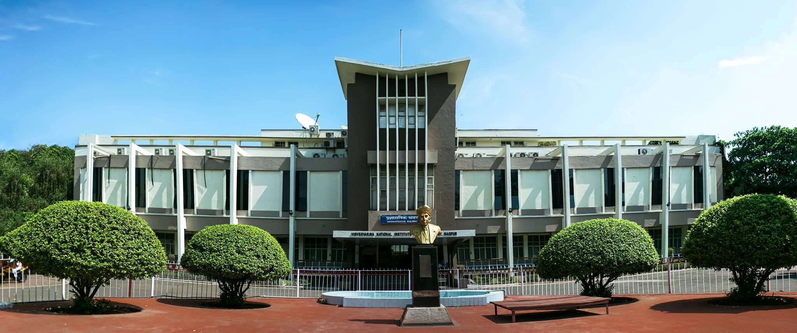
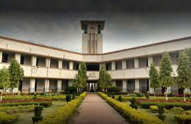
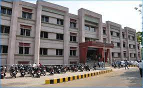

Colleges in Nagpur
VNIT NAGPUR

Visvesvaraya National Institute of Technology, Nagpur is one of the thirty National Institutes of Technology in the country.
The Govt. of India conferred on the Institute, the Deemed to be University status (under University Grants Commission Act, 1956 (3 of 1956))
with effect from 26th June 2002.
LIT NAGPUR

Laxminarayan Innovation Technological University is a public state university of the Government of Maharashtra situated at Nagpur, Maharashtra, India. It was
established in 1942 and is one of the oldest engineering colleges for Chemical Engineering and Technology in India.
YCCE NAGPUR

Yeshwantrao Chavan College of Engineering was established in the year 1984 by Nagar Yuwak Shikshan Sanstha, Nagpur.
YCCE is the prominent institution acknowledged for remarkable engineering education and research. Since 38 years the institution has magnificently
cherished and encouraged the forthcoming engineering professionals across the country making us one of the most opted engineering colleges in Maharashtra.